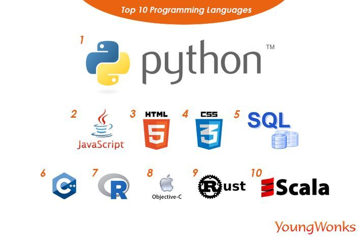

about me
my name is elene,i'm learning python,html and little bit of css.i love learning programming because it gives me lot of experience.
i love programming
i want to learn more about programming
my name is elene,i'm learning python,html and little bit of css.i love learning programming because it gives me lot of experience.